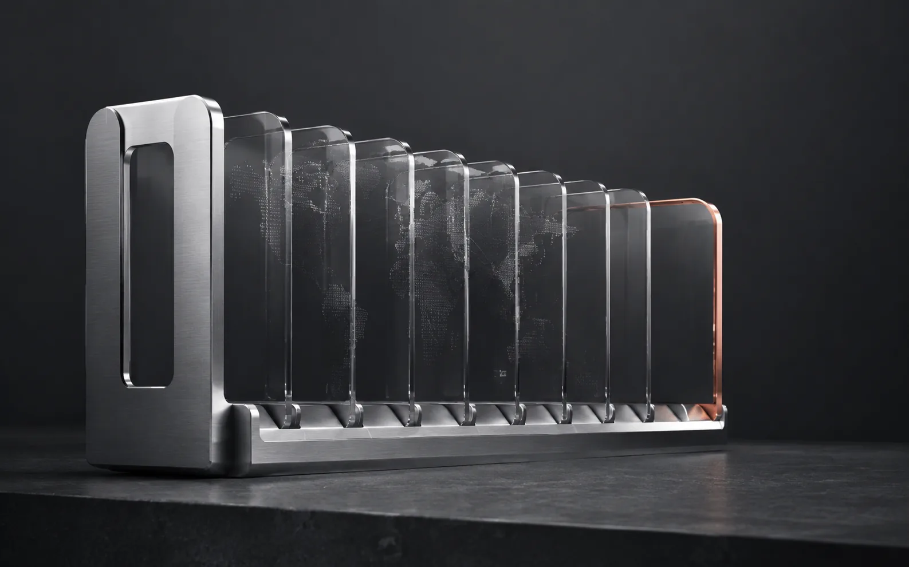
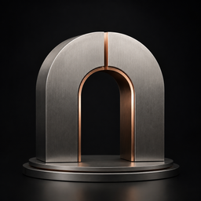
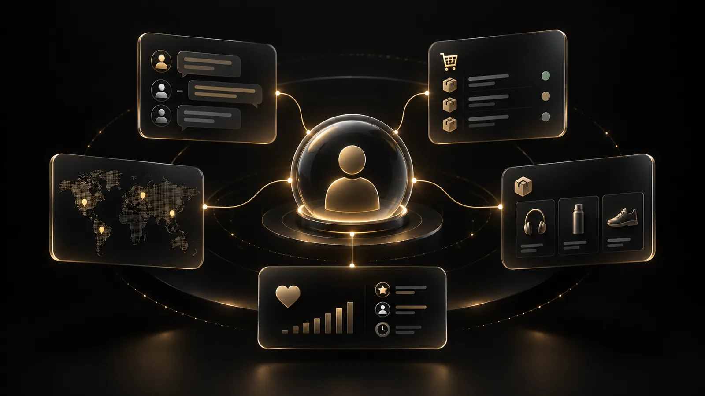
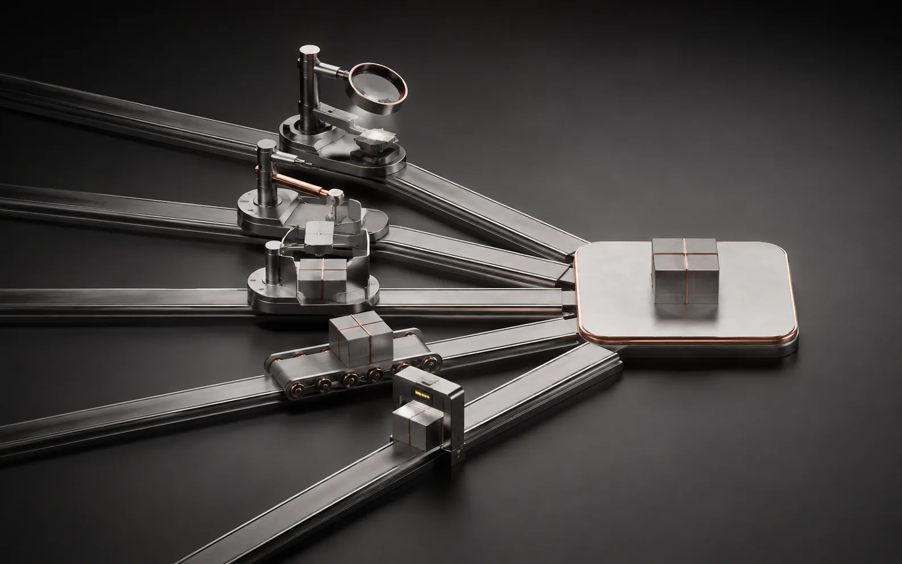
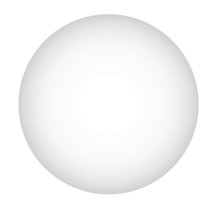

%22%3E%3Cpath d=%22M83 14C83 21.732 76.732 28 69 28L19 28L19 10C19 4.47717 23.4772 0 29 0L69 0C76.732 0 83 6.26801 83 14Z%22 fill=%22white%22%2F%3E%3Cpath d=%22M3.68483 45.8079L13.9634 42.4824C15.3677 42.0281 15.8129 40.2613 14.7917 39.1957L7.83858 31.9403C6.78647 30.8424 4.94254 31.2738 4.48662 32.7244L1.1612 43.3053C0.674233 44.8547 2.13954 46.3078 3.68483 45.8079Z%22 fill=%22white%22%2F%3E%3C%2Fg%3E%3Ctext x=%2232%22 y=%2233%22 text-anchor=%22middle%22 dominant-baseline=%22central%22 font-family=%22'Inter Tight'%2CInter%2C'Segoe UI'%2CArial%2Csans-serif%22 font-weight=%22700%22 font-size=%2216%22 fill=%22black%22%3E%E7%BB%8F%E8%90%A5%3C%2Ftext%3E%3C%2Fsvg%3E)

企业研究
企业研究
企业研究
查清企业规模、市场、主营产品与渠道，信息注明来源与更新时间。
贸易情报
贸易情报
贸易情报
从依法授权的贸易数据与公开信息里，读出采购记录与供应商变化。

补货判断
补货判断
补货判断
根据采购周期判断补货窗口；证据不足时标注待核实，不编造需求。

关键决策角色
关键决策角色
关键决策角色
找出采购决策人与影响者，保留身份匹配依据，确认后交给 Sales Desk。
Sales Desk：把客户聊明白，把订单跟到底
Sales Desk 承接 Growth OS 确认的客户与各渠道询盘：统一入口把它们收进来，需求从来信和附件里读出来，客户全景记下背景与历史。三者一起服务于回复、产品匹配、跟进、报价与 PI，直到订单交接。工作成果：客户档案、结构化需求、产品方案、待审核回复与连续的销售跟进记录。已有业务工作台；渠道收发、价格和业务交接逐项接通与验证。


按产品配置、数量、包装、币种和贸易条款准备报价草稿；价格来自企业确认的价格表与历史报价，折扣和利润越过边界须由有权人批准，AI 不自行编价。每一版都留存、可比较，批准的版本再转为 PI 与合同，并衔接商业发票、装箱单等单证的准备与人工复核。批准报价不等于已经发送，发送也不等于客户已经收到，三者分别确认。报价与 PI 持续完善；真实价格、合同、签章与单证按企业系统接通。你公司实际开通哪些，方案沟通时逐项确认。价格与产品事实的依据，见产品与企业知识。
产品档案、规格、物料清单与供应商资料保持一致，订单需求衔接采购与到货跟进。已有 ERP 与商城基础，跨系统协同和 AI 操作按企业配置验收。

图片
视频
(05)
1. AI 作图与图片编辑
提供文字说明、产品参考图或已有素材，在同一个工作流里生成和编辑图片：白底主图、场景图、海报、卖点图和广告创意。
制作时套用企业统一的品牌资产、标志、配色、语气和已确认的产品事实；外观、参数或文字不准确的地方，先检查再局部修正，降低素材“好看但不真实”的风险。你查看的是可以比较、可以继续修改的图片版本。
开放说明：创意工作室已有基础；营销套件、局部检查与一键编排持续整合。
2. AI 一键生成视频 · 建设中
- 制作需求
- 脚本
- 分镜
- 画面
- 配音
- 字幕
- 审核与导出
输入产品资料、参考图片、目标市场、语言、时长和画幅，把制作需求组织成一个视频项目。流程涵盖脚本、分镜、画面、配音、字幕、审核和导出，保留素材、任务状态与版本，减少工具切换与反复交接。
生成之前，先形成一份可审阅的制作方案：开场吸引点、卖点表达、镜头顺序、节奏与结尾行动引导。画面以已确认的产品事实和品牌规范为准，并保留质量检查；多语言旁白、音乐、品牌标志、片尾和参数标注在后期加入，均按可用工具和已授权素材制作。生成预算、审批与任务状态随项目记录。
产品介绍、广告、品牌宣传与社媒短片，都围绕同一套产品和品牌资料展开。目标是支持横版、竖版、方版，以及失败镜头的局部重做。
开放说明：当前一键成片流程仍在建设；真实生成、播放、编辑和最终导出需要完整验收。最终成果必须是可播放、可导出的文件，而不是仅有“任务完成”的提示。
4. 商品营销套件、详情页与图册
选定产品、目标市场、销售平台和语言，一次规划主图、卖点图、细节图、参数图、品牌展示图与配套文案，减少逐张反复下指令。
同一套产品资料继续延伸为商品详情页、宣传图册、产品介绍和销售支持资料；品牌标志、关键参数、价格和文字放在可核对的排版里，便于逐项确认。成果可以继续用于销售、官网、商城和社交平台。
开放说明：创意工作室已有基础；营销套件、局部检查与一键编排持续整合。
5. 多语言文案与社媒内容
从已确认的产品资料、目标市场和语言出发，撰写社媒、产品和销售文案并做多语言本地化，让同一个产品故事贯通产品页面、销售方案与社媒。
营销活动的文案与发布素材围绕同一个故事准备，按市场和渠道整理成可以审阅的文字与配图组合。
开放说明：创意工作室已有基础；营销套件、局部检查与一键编排持续整合。发布到外部渠道需要单独授权。
6. 官网、搜索与 AI 搜索内容
提供产品资料、目标市场和你正在经营的销售网站，为官网产品页与市场页撰写文案，并按目标语言本地化。
内容按搜索引擎和 AI 搜索的阅读方式规划：结构清楚、事实可核对、说法有出处，目标是让买家更容易找到你，也让 AI 搜索准确引用；搜索排名和引用结果不作保证。你收到的是内容规划和页面文案，确认后再上线。
开放说明：创意工作室已有基础；营销套件、局部检查与一键编排持续整合。发布到外部渠道需要单独授权。
7. 素材、版本与短视频剪辑
把制作需求、步骤、参考素材，以及图片、视频和音频放进同一个创意工作空间；每个项目保留版本与素材库，成熟的制作流程可以直接复用。
已有的产品视频可以剪成社媒短片，长视频拆条、竖屏改版和字幕适配也在这里衔接。每次改动都有版本记录，目标是只重做需要修改的镜头或局部，不必每次从头再来。你得到的是带版本记录的素材库，以及按已开放能力剪出的短片。
开放说明：创意工作室已有基础；营销套件、局部检查与一键编排持续整合。长视频拆条、竖屏改版与字幕适配按已开放能力执行。




01 工作空间与经营总览
应用、文件、目标、任务与经营重点，在同一个工作空间组织。
工作空间
像使用一台企业专属电脑一样，在一个网页桌面里打开业务应用、处理文件、调用数字员工、连接外部账号并执行授权任务。
- 多应用桌面与文件空间 通过桌面、任务栏和多个应用窗口组织日常工作，统一文件、资料和业务入口，减少在不同网页与工具之间反复切换。
开放说明 网页桌面为当前重点；语音、自动化、外部动作及其他终端按范围开放。原生电脑客户端、移动端与小程序按路线分阶段完善。
经营总览
老板需要看到的不只是「AI 很忙」，而是谁在做什么、钱花在哪里、客户推进到哪一步、哪里需要自己决定。
- 老板驾驶舱 汇总客户、商机、报价、订单、跟进、关键审批和异常，形成经营概览；指标只能来自已接入数据，缺失时明确显示。
- 任务总控 查看目标、任务、执行步骤、负责人、等待审批、失败原因与结果，明确区分进行中、已提交、结果待核对和已验证完成。
- 数字员工与协作管理 通过员工总览和协作分工表查看岗位、技能、任务分配、负载、历史与团队交接，让数字团队有可理解的分工和记录。
- 控制中心 统一数据同步、应用库、系统关系图、能力中心和系统运行状态等管理入口；控制中心管理系统，不替代日常的 AI 对话与任务入口。
工作成果 看得见进度、管得住关键动作、查得清责任与结果。
开放说明 管理与控制已有基础；看板数据、自动动作和高级分析按真实接入验收。
目录条目
企业经营总览 公司现在在做什么，一屏看完
企业 AI 指挥中心 目标交下去，盯着它走完
云端企业工作桌面 人和 AI 员工共用的云端办公桌
AI 员工与长任务运行中心 盯住长时间运行的工作，需要时插手
任务执行过程 AI 员工做过什么，逐步回放
系统关系图 业务记录与各系统之间如何关联
企业 AI 应用库 企业为各团队开通的内部应用
多窗口 AI 工作空间 几件事同时开着，各自不丢进度
移动办公与任务管理 离开工位也能跟进度、处理审批；移动端分阶段开放
企业通知 什么变了，什么在等你
审批中心 所有待决事项排在同一个队列里
语音指挥 AI 用语音提需求、建任务，按已开通的服务使用
02 主动获客与商机判断
从产品与市场出发，找到目标企业，形成背调和开发优先级。
不是只整理已有询盘，而是围绕产品、目标市场和客户画像，寻找值得开发的企业，判断机会，再交给销售继续推进。
- 全球客户发现 围绕经销商、进口商、批发商与目标企业，从搜索引擎、企业官网、地图、社交平台、展会及依法授权的贸易数据中寻找线索。
- 市场信号与补货雷达 关注采购记录、补货周期、供应商变化、招聘、扩张和企业动态。识别采购窗口与产品组合缺口；证据不足时提示待核实，不编造需求。
- 客户背调与关键联系人 整理企业规模、地区、主营产品与渠道；查找联系人、邮箱、社交账号及采购决策角色，保留来源、更新时间和身份匹配依据。
- 商机评分与开发优先级 综合产品匹配、市场适配、采购信号、联系人覆盖、风险和商业价值，形成客户画像、商机简报与开发优先级。
- 开发策略与持续跟进 生成多语言开发邮件、沟通话术和跟进计划；覆盖展会线索二次开发、沉睡客户唤醒、老客户补货机会和触达结果分析。
- 确认后转入 Sales Desk 将确认过的客户连同来源、背调、产品兴趣与下一步任务交给销售工作台，不必先等客户发来询盘，也避免重复建档。
给老板的价值：把「业务员到处找客户」变成有目标、有证据、有优先级的客户开发。
工作成果 目标客户清单、联系人信息、商机简报、开发优先级与下一步任务。
开放说明 核心流程建设中，真实数据与客户触达按授权接入。
目录条目
Growth OS 主动获客 从市场信号到确认后的客户，再交给 Sales Desk
贸易信号与商机线索 观察到的贸易活动，沉淀成可跟进的客户
进口商补货雷达 判断哪些进口商快到补货窗口
竞争对手客户图谱 依据可用的贸易记录，看谁在向同类供应商采购
决策链识别 谁拍板、谁影响、谁签字
经销商机会发现 找出产品线正缺你这一块的经销商
地图经销商发现 按区域找经销商与分销商
机会决策 建议跟进、搁置还是放弃，并给出理由
经销商机会简报 为何接触这家经销商，一页说清
销售打法生成 针对这个客户和市场定打法
六因子机会评分 按产品、市场、采购信号、联系人、风险与价值六项排序
客户研究 收集企业证据，注明出处
贸易情报 从现有贸易记录读出需求与走向
官网 AI 销售工程师 官网上回答产品问题，同时留住线索
沉睡客户再激活 给沉睡客户一个重新开口的理由
展会线索持续转化 一叠名片，排成有日期的跟进计划
确认客户写入 CRM 确认后的客户写入 CRM 并指定负责人，避免重复建档
结果归因与增长分析 哪些动作带来了询盘和订单；高级分析按资源配置开放
03 市场渠道与客户发现
区分研究来源、沟通渠道与内容平台，按授权使用。
找客户的信息来源、与客户沟通的渠道、发布内容的平台，各司其职。STARGO WORK 在企业授权与已接入范围内，把相关信息交给同一套客户、销售与跟进流程。
- 发现客户 公开搜索、企业官网、地图、社交平台、展会与依法授权的贸易数据，帮助找到经销商、进口商、批发商与目标企业，并保留每条线索的来源。
- 承接沟通 企业邮件、WhatsApp、阿里国际站与网站询盘承接和客户的沟通；各渠道的往来汇入同一个客户背景，接手的人看得到完整经过。
- 内容传播 官网、社交平台与产品内容支持品牌传播；多语言文案与搜索内容可以提前准备，向外部渠道发布需要单独授权。
开放说明 接入以企业账号授权和实际服务范围为准。显示平台名称不表示所有渠道默认开通，也不表示具备全部收发权限。
目录条目
社区需求侦察 在买家提问的社区里被找到
AI 搜索时代的可见性 AI 搜索时代，内容能被搜到、被引用
企业决策人触达 在决策人活跃的职业平台，经授权后触达
社交需求信号 读你所在品类的社交需求信号
平台询盘接入 平台询盘落到同一条客户时间线
视频渠道信号 买家在搜什么、看什么
即时沟通销售 许多海外买家常用的即时沟通渠道，经授权接入
邮件开发与跟进 邮件触达与后续跟进
电商平台接入 平台商品与消息，汇入同一条客户记录
新渠道接入 新渠道接入同一套客户与销售流程
04 询盘与多渠道沟通
理解需求、整理附件、辅助回复、跟进并保留人工接管。
承接 Growth OS 的主动开发客户与各渠道询盘，让客户资料、沟通、产品需求、报价和跟进状态围绕同一条销售链协同。
- 统一询盘与消息入口 集中组织企业邮件、网站询盘、WhatsApp 与阿里国际站等渠道消息，区分新询盘、历史消息、状态回执、垃圾信息与异常线索。
- 需求理解与附件处理 识别采购产品、规格、数量、市场、预算、交期等需求，整理客户上传的目录、表格、图片与图纸资料，并提示缺失信息。
- 企业知识驱动的销售回复 查询产品参数、价格政策、起订量、包装、认证、交期和贸易条款，辅助产品匹配、翻译和多语言回复；缺少真实资料时明确提示。
- 跟进任务与人工协作 生成回复草稿、跟进策略、下一步任务和提醒；保留人工审批、人工接管及销售阶段管理，避免多人或多个 AI 重复触达。
工作成果 结构化需求、产品方案、待审核回复与连续的销售跟进记录。
开放说明 已有业务工作台；各渠道真实收发与业务交接仍需逐项连接、验证。
目录条目
统一收件箱 各渠道汇入同一队列，客户已对应好
邮件询盘处理 读来信，直接打开对应客户记录
平台询盘处理 平台询盘按同一套流程处理
官网会话 官网对话，沉淀为合格询盘
会话中心 跨渠道的对话集中在一处
询盘意图识别 分清真实采购需求与噪音
垃圾与诈骗识别 假询盘挡在销售队列之外
买方需求提取 从自由文本里提取产品、参数、数量与条款
公司背景研究 回复之前，先核实对方是谁
客户风险信号 付款、合规、可信度的疑点，尽早标出
产品匹配 把提出的需求匹配到已审核产品
基于企业知识的回复 依据企业已审核资料起草答复
多语言回复 用买家的语言回复，依据同一份资料
人工审批与升级 敏感承诺交给有权限的人
计划内跟进 没有回音时，按批准的计划准备下一次触达
客户时间线 说过什么、发过什么，按时间排成一条
05 CRM 与客户全景
统一客户、联系人、商机、历史沟通、报价和后续任务。
CRM 是 Sales Desk 的客户底账：主动开发的客户与各渠道询盘落在同一份客户档案里，接手的人有完整上下文。
- CRM 与客户全景 统一公司、联系人、来源、标签、负责人、商机阶段、沟通时间线、产品兴趣、报价和订单记录，让接手客户时有完整上下文。
- 贯穿成交与后续维护 将客户沟通连接到报价、PI、订单交接、交付和售后，持续沉淀成交原因、未成交原因与复购机会，而不是发完消息就结束。
业务主线：客户确认 → CRM → 沟通与产品匹配 → 报价 / PI → 订单交接 → 售后与复购。
工作成果 客户档案与连续的销售跟进记录。
开放说明 已有业务工作台；各渠道真实收发与业务交接仍需逐项连接、验证。
目录条目
客户与商机记录 客户、机会与负责人的那本账
客户全景 这个客户的已知信息，一屏看全
客户工作间 每个客户一个工作区，人与 AI 员工共用
联系人与商机管理 联系人、机会及各自进展
线索评分 把值得打电话的客户排到最前面
产品兴趣 · 报价历史 · 订单历史 问过什么、报过什么价、实际买了什么
客户任务与跟进计划 下次触达、日期、责任人
决策人映射 记下谁决策、谁影响、谁签字
客户证据 每条判断都留出处
CRM 记录维护 负责人、阶段与下一步按规则更新，少一些手工录入
06 产品与企业知识
产品参数、价格政策、认证、模板和企业经验，有据可查。
知识库回答「公司知道什么」：产品、价格政策、合同模板、制度与经验集中在企业资料室里，回答和执行都能找到依据。
- 企业知识中心 集中公司资料、产品目录、技术参数、价格政策、认证、常见问题、销售话术、合同模板、制度、标准流程与历史项目，形成可检索的企业资料库。
- 知识接入与有据可查的回答 接入文件和经授权的知识源，记录来源、版本、权限与更新时间；回答和执行时引用依据，遇到冲突或资料过期时提示核实。
- 报价与回复的产品依据 产品配置、规格、包装与价格政策来自企业确认的资料；报价、PI 与销售回复引用同一份产品事实，缺少资料时明确提示，不让 AI 自行编价。
关键原则：价格来自企业确认的数据，回答有据可查，资料冲突或过期时先核实。
工作成果 知道应采用哪一版资料，每个回答都附带依据。
开放说明 企业知识与业务关联已有基础；高级关联和企业资料模板按接入情况逐步完善。
目录条目
企业大脑 企业已审核的答案，集中在一处
知识中心 已审核的企业答案，在这里保持最新
资料导入 文档和文件，沉淀成可引用的知识
知识检索 找出能回答这个问题的那一段
原文检索 取回答案所依据的原文
网盘与文档接入 直接读团队现有文档，不用先迁移
产品智能 规格、选配与限制，AI 能据此推理
产品中心与产品库 整条流程共用的同一份产品记录
产品参数与图片 买家会追问的那些技术细节
历史知识与业务规则 公司以前定过、现在仍然算数的规矩
证据检索 给出答案，附上支撑文档
有据可查的回答 缺少审核过的来源时明确提示，不编造答案
07 报价、PI 与商业文件
按规则准备报价，保留批准版本和文件交接。
把「找价格、改表格、反复确认条款」的分散操作，组织成有版本、有审批、有真实数据依据的商业流程。
- 产品配置与报价规则 按产品配置、数量、包装、币种和贸易条款形成报价草稿；关联价格表、历史报价、折扣权限及利润边界，避免 AI 自行编价。
- 报价中心 统一报价模板、草稿、版本比较、审批与已批准报价；客户修改数量或配置时保留变更记录，降低错发旧版本的风险。
- PI 与商业确认 将确认后的报价转为 PI，维护条款、金额、付款节点与批准版本快照；报价批准与实际发送分别受控。
- 合同与电子签协同 组织合同模板、商务条款、版本和审批，辅助查找前后矛盾与待确认事项；电子签及法律审阅按企业系统和专业人员流程衔接。
- 外贸单证与资料归档 覆盖商业发票、装箱单、原产地证及 Form E 资料、提单、认证与运输资料的准备、核对和归档；正式签发由相应机构完成。
- 客户与交易风险辅助 整理客户身份、制裁或风险名单线索、HS 编码与认证要求资料，保留筛查依据并升级人工复核，不代替专业合规判断。
关键原则：价格来自企业确认的数据，商业文件可追溯，重要承诺由人批准。
工作成果 报价草稿、批准版本、PI、商务条款与可追溯的商业资料。
开放说明 报价与 PI 持续完善；真实价格、合同、签章与单证按企业系统接通。报价获批不等于已经发出，发出也不等于客户已经收到。
目录条目
报价工作室 报价从询盘开始，不从空表格开始
询盘到报价 需求直接落成带价格的草稿
产品配置与数量计算 报的到底是什么，数量多少
贸易条件 套用约定的付款、交期与质保条款
价格规则 按你配置的规则定价，不靠猜
利润护栏 报价越过利润线，没人批就过不了
历史价格参考 这个买家、这个市场，以前成交价多少
审批流程 例外转给有权拍板的人
报价版本 每一版都留存，改动也留痕
形式发票中心 批准的报价转成形式发票，发送另行确认
08 ERP、订单与履约
覆盖 ERP 与商城经营，以及采购、库存、生产、质检、物流、回款、出口资料和售后协同。
ERP 经营
把销售前端与企业经营后台放到同一个桌面：不仅知道客户要什么，也要知道产品、物料、库存、生产、订单与收款在哪里。
- 产品、物料与物料清单 组织产品档案、规格、物料编码、物料清单和配置关系，为报价、采购、生产与库存协同提供一致基础。
- 采购与供应商协同 将订单需求衔接到采购计划、供应商资料、询价、采购单和到货跟进；跨系统写入与批准流程按企业规则配置。
- 库存与仓储管理 组织库存查询、仓库、出入库、物料流转与缺货信息，让业务人员了解可交付数量，并为后续预警与补货协同提供数据。
- 生产、质量与交期 跟踪生产任务、物料需求、进度、质检、包装及交期，逐步将生产异常与销售承诺、客户沟通关联起来。
- 订单、开票与经营记录 管理订单、报价、发票、多币种商业记录与相关单据；将客户需求、交易记录和履约状态对应起来，减少重复录入。
- 商城与经销商业务 覆盖商品目录、销售地区、购物车、订单和商城管理后台；可按企业需求衔接品牌商城、经销商门户与客户资源协同。
给老板的价值：前端拿订单，后台管交付；ERP、商城与 AI 协同，但不混淆各系统的数据权威。
工作成果 能不能交、什么时候交、交付后记录是否一致，都有相应资料可以核对。
开放说明 已有 ERP 与商城应用基础；跨系统协同和 AI 操作按企业配置验收。
履约回款
成交只是中间节点。围绕订单、供应链、单证、资金节点和客户体验，扩展跨部门协作与经营闭环。
- 订单与履约里程碑 围绕订金、生产、质检、包装、发货与客户确认组织任务、负责人和截止时间，识别延期、资料缺失及跨部门等待。
- 物流与运输协同 衔接运费询价、订舱、物流轨迹、预计到达时间及异常处理；服务范围取决于企业使用的货代、物流和订单系统。
- 财务与回款辅助 整理订金、尾款、应收应付、发票、对账及订单利润信息，辅助到期提醒、现金流观察与异常检查；资金支付不由 AI 擅自执行。
- 出口与退税流程 管理出口资料清单、业务阶段、文件一致性、审批与进度提醒，辅助退税资料整理与申报协同，不等同于自动完成官方申报或获批。
服务复购
- 售后、保修与备件 围绕客户问题、工单、保修、退换货、备件和处理进度进行协同；将高频问题回流产品资料、常见问题与销售知识。
- 经销商维护与复购 沉淀经销商历史订单、产品偏好、问题与跟进计划，组织销售支持资料、补货建议、客户唤醒及复购机会。
完整目标：获客 → 销售 → ERP / 履约 → 财务协同 → 售后复购 → 新一轮增长。
工作成果 订单里程碑、付款提醒、资料清单、异常事项、售后记录与复购跟进。
开放说明 按订单、物流、财务与服务系统的接入情况，分阶段交付。正式申报、证书签发与资金支付仍由相应有权人员和机构处理，不会由 AI 自动完成或获批。
目录条目
订单管理 从批准的报价一路跟到交付
贸易执行引擎 批准的商务条件，带进履约环节
付款节点 定金、尾款，以及还差什么没到
生产进度与质检 货在哪一步，检验过没过
包装与出货 怎么装运，随货走哪些东西
商业发票 · 装箱单 按批准的订单数据生成，待人复核
原产地证 · Form E 整理申请材料；签发仍归主管机构
提单流程 运输单据跟着货走
认证与电池资料 认证与电池相关材料按目的国备齐
出口单证与流程 出口单据从准备到复核的整条链
六阶段出口退税流程 按六个阶段整理退税资料、跟踪进度；申报与受理归主管部门
整车 / 半散件 / 全散件流程 整车、半散件、全散件的装运资料分别整理
09 AI 图片、视频与营销
图片编辑、商品套件、详情页、图册、视频项目与爆款结构再创作。
AI 作图与品牌内容
AI 创意能力不只是写文案：围绕真实产品与品牌规范，组织图片、详情页、图册、广告素材和多语言内容生产。
- AI 作图与图片编辑 支持以文字、产品参考图和已有素材开展生成与编辑工作流，服务白底主图、场景图、海报、卖点图及广告创意。
- 一键商品营销套件 以产品、目标市场、平台和语言为输入，规划主图、卖点图、细节图、参数图、品牌展示图与配套文案，减少反复下指令。
- 详情页、图册与销售资料 组织商品详情页、宣传图册、产品介绍和销售支持资料；品牌标志、关键参数、价格与文字采用可核对的排版内容。
- 品牌与产品一致性 统一品牌资产、标志、配色、语气和产品事实；对不准确的外观、参数或文字做检查与局部修正，降低素材「好看但不真实」的风险。
- 创意画布与素材管理 在同一创意工作空间组织制作需求、步骤、参考素材、图片、视频与音频，沉淀版本与素材库，复用成熟的制作流程。
- 全球营销与搜索内容 生成官网、社媒、产品和销售文案，支持多语言本地化、搜索引擎与 AI 搜索内容规划、营销活动和发布素材准备；渠道发布单独授权。
给老板的价值：同一套产品事实，持续产出能用于销售、官网、商城和社交平台的品牌素材。
工作成果 围绕同一产品与品牌规范组织图片、文案和销售素材，保留版本与局部修改。
开放说明 创意工作室已有基础；营销套件、局部检查与一键编排持续整合。
AI 一键生成视频 · 建设中
将文案、分镜、素材、画面、配音、字幕和导出组织成一个视频项目，目标是减少营销视频制作中的工具切换与手工交接。
- 输入产品与视频目标 根据产品资料、参考图片、目标受众、语言、时长和画幅，组织产品介绍、广告、品牌宣传与社媒短视频项目。
- AI 导演与分镜规划 围绕开场吸引点、卖点表达、镜头顺序、运镜、节奏及结尾行动指令生成制作方案，让内容生产有可审阅的前置计划。
- 画面、镜头与素材生成 衔接图片与视频生成能力，按项目组织镜头和产品素材；用产品事实与品牌规范约束生成内容，保留质量检查环节。
- 配音、字幕与后期组织 把多语言旁白、字幕、音乐、品牌标志、片尾和参数叠加纳入后期流程，按可用工具和授权素材完成制作。
- 项目版本与局部重做 保存产品资料、参考素材、分镜、任务状态和成果版本；目标是支持失败镜头单独重做，避免每次推倒整条视频。
- 预览、导出与成本控制 组织横版、竖版、方版等输出，记录生成预算、审批、任务状态和最终文件；只有可播放、可导出的成果才能算交付。
当前边界：已有项目、素材与任务记录等基础；真实生成、播放、编辑与导出的完整成片验收仍需补齐。
工作成果 围绕产品视频、广告、品牌宣传与社媒短片组织制作项目；完整成片交付以实际验收为准。
开放说明 一键视频建设中；真实生成、播放、编辑与导出的完整成片仍需验收。能打开页面不等于成片可以交付。
爆款结构再创作 · 建设中
把「这个视频为什么吸引人」拆解为可用的营销结构，再结合自己的产品、品牌与目标市场，生成新的创意版本。
- 参考视频接入 输入有权使用的参考视频和自身产品素材，确认素材来源、使用权与制作目标，为结构分析建立明确边界。
- 拆解创意结构 分析开场吸引点、镜头功能、时长、节奏、运镜、产品出场时机、字幕表达、情绪变化与行动指令，而不是直接复制原片。
- 替换为自己的产品与品牌 用企业已确认的产品事实、卖点和品牌资产重新组织创意，调整场景、市场、语言与表达，避免把参考片的信息误当作自身事实。
- 一次组织三个原创版本 围绕不同开场、场景或表达角度组织三个版本，明确每版变化点，便于比较创意策略，而非得到三个无法解释的随机结果。
- 生成、审核与多尺寸输出 把新脚本、分镜和素材交给视频制作流程，组织品牌、字幕及多尺寸导出。长视频拆条、竖屏改版与字幕适配按已开放能力执行。
- 创意测试与内容资产沉淀 保留参考结构、版本差异、制作成本与发布反馈；后续结合渠道数据比较内容表现，积累可复用的企业创意方法。
「复刻」指结构借鉴与原创改编：不直接复制原片、人脸、声音、音乐、标志或水印，也不承诺必然成为爆款。
工作成果 参考结构说明、原创脚本与分镜、版本变化点和后续制作任务；不承诺必然成为爆款。
开放说明 爆款结构分析与再创作建设中；不直接复制原片，不承诺必成爆款。从结构分析到成片的完整流程仍需验收。
目录条目
AI 创意工作室 围绕真实产品，组织产品页所需的图片与销售素材
内容生产与全球官网内容 为你的目标销售站点写产品与市场文案
搜索优化 · AI 搜索可信内容 内容结构化，既能被搜到，也能被引用
多语言内容 同一个产品故事，覆盖目标市场
产品 · 销售 · 社交内容 同一个产品故事，贯通页面、方案与社媒
AI 图片与视频流程 按可复用的流程产出产品图片；视频流程建设中
爆款结构再创作 借鉴有效视频的结构，为你的产品做原创改编（建设中）
爆款结构 · 场景 · 语音 · 产品分析 拆解有效视频的开场、节奏与表达（建设中）
剪辑与短视频 把产品素材剪成社媒短片，按已开放的能力使用
10 数字员工与团队协作
288 个专业岗位，围绕任务选人、派工、交流与接力。
288 个专业数字岗位
数字员工不仅服务外贸，也覆盖企业支持、市场、销售、客服、合规、供应链、财务、运营、产品工程与专业服务。
| 岗位类别 | 数量 |
|---|---|
| 企业通用支持 | 15 |
| 客户开发与市场 | 50 |
| 销售 | 16 |
| 客户服务 | 5 |
| 风控与合规 | 20 |
| 供应链 | 4 |
| 财务 | 14 |
| 运营 | 19 |
| 产品与工程 | 129 |
| 专业服务 | 16 |
| 合计 | 288 |
- 每个岗位有什么 可以配置职责、技能、企业知识、可用工具、权限、任务和运行记录，让岗位有明确分工，执行时有企业背景与范围。
- 复杂任务怎样组队 按岗位、技能、知识、权限与任务复杂度选择合适员工，明确每个成员的职责，分别处理研究、销售、产品、内容或数据工作。
- 老板怎样交办工作 提出业务目标，选择合适员工或团队，查看任务和成果，并批准关键动作。需要判断或遇到异常时保留人工接管。
- 成果怎样接力和管理 记录责任、截止时间、任务状态、结果与下一步；将不同成员的工作汇总为可交接的成果。更深入的团队互通按建设进度开放。
不是「同时雇用 288 个真人」，而是拥有可按任务选择、配置与派工的专业数字岗位目录。
工作成果 可按任务选用的专业数字岗位目录，以及职责、任务、工作记录与交接成果。
开放说明 288 是岗位目录数量，不是同时执行数量，也不等于替代 288 名真人员工；实际启用、同时执行的任务及操作范围受配置、预算和权限约束。
多个 AI 员工交流协作
一个复杂任务可以交给多个数字员工分工完成。重点不在聊天人数，而在信息能否传递、责任是否明确、结果能否交接。
- 按任务选人和组队 根据岗位、技能、企业知识、工具权限与任务复杂度查找合适员工，形成小型团队，并说明各成员职责。
- AI 员工之间交流信息 围绕任务支持协作会话、定向消息、问题转交、补充信息与进度通知，减少所有信息都必须由人手工复制的情况。
- 并行执行与结果汇总 让研究、销售、产品、内容或数据员工并行处理不同子任务，由统筹角色检查结果并合成为一个交付包。
- 共享事实，不越权共享 同一客户、产品、任务与审批状态使用共同依据；共享任务上下文不意味着共享所有企业数据，更不会自动获得其他员工的权限。
- 责任认领与持续接力 记录任务目标、负责人、认领状态、截止时间、证据、失败原因和下一步，让暂停、人工接管与恢复后仍能继续推进。
- 协作有边界，工作可停止 对协作次数、预算和可执行动作设置限制，防止循环讨论、重复执行与越权操作。人工审批、暂停、接管和结果核对始终保留。
场景示例：研究员工找客户，销售员工定策略，产品员工匹配规格，创意员工做素材，统筹员工汇总后交人确认。
工作成果 按责任汇总的结果、成员之间的交接记录，以及清楚的下一步任务。
开放说明 基础员工选择与派工已有记录；更深入的团队交流协作仍在完善，按建设进度分阶段开放。
目录条目
288 个专业 AI 员工 按岗位分工的数字岗位目录，不是同时运行的数量
AI 员工名册 谁在岗，各自负责什么
员工面板 派活、看进度、复核交回来的结果
动态组队与多 AI 员工协作 一个目标，几个专业岗位分工协作，而不是一次问答
AI 员工间交流 岗位之间传递任务信息，少一些人工转述；深入协作持续完善
岗位 · 技能 · 工具 · 记忆 每个员工做什么、懂什么、能用什么、记得什么
共享企业上下文 同一份业务事实，按各自权限使用
任务委派 · 交接 · 并行执行 任务拆开、在岗位间流转、并行推进
定时工作 按时跑的例行研究与跟进
执行证据与人工审批 审批人拍板前看的那份记录
11 自动化与日常办公
表格、报告、语音、授权网页任务与定时工作。
在同一个网页桌面里整理表格与报告、用语音交办、执行授权网页任务、连接企业账号，并把重复工作排进定时或事件触发的流程。
- AI 表格、文档与报告 围绕客户清单、产品表、报价表与经营统计整理数据，辅助文件生成、翻译、总结及报告制作；复杂格式按工具能力与模板配置。
- 语音助手与语音转任务 通过语音提出需求，衔接转录、对话、知识检索、任务创建与业务跟进；实时语音和具体业务动作按企业开通的服务与配置开放。
- 云端操作与网页任务 在授权环境中搜索网页、操作后台、填写表单、上传下载和整理资料，减少重复手工操作；不绕过登录、安全验证或平台规则。
- 连接企业账号与应用 按需连接邮箱、网盘、CRM、ERP 和业务平台，通过企业授权开放相应功能，明确哪些信息可查看、哪些记录可修改、哪些动作需要审批。
- 自动化、同步与应用扩展 用定时、事件、触发条件与工作流组织重复任务；管理数据同步、错误、重试和应用扩展，让新增工具围绕既有业务协同。
工作成果 客户清单、产品表、报价表、报告、纪要、待办与授权的重复工作。
开放说明 网页桌面为当前重点；语音、自动化、外部动作及其他终端按范围开放。
目录条目
AI 员工工作环境 为每个 AI 员工配好工具、划定边界
工作流自动化 跨应用把步骤连起来，不用写代码
数据整理与定期作业 流程需要的数据整理与定期处理
长任务控制 长时间任务保留目标与进度，可暂停、恢复和接力
浏览器自动化 在授权范围内操作网页工具，不绕过登录与安全验证
界面操作 无法对接时，在授权环境中操作界面
定时例程 · 事件触发 按时间跑，或在业务状态变化时跑
授权动作与工具连接 AI 员工获准使用的业务动作与工具
外部系统连接 对接团队已在用的系统
凭据管理 账号密码统一保管，不交给 AI 员工直接查看
12 企业业务关系与上下文
把客户、产品、报价、订单、规则与责任对应起来。
知识库回答「公司知道什么」；企业业务关系图进一步说明客户、产品、订单、规则和任务之间怎样关联。
- 企业业务关系图 把客户、联系人、产品、询盘、商机、报价、订单、文件、任务和员工联系起来，说明当前状态、发生了什么、下一步由谁推进。
- 同一个客户，不同记录能对应 识别不同系统里是否是同一个客户、产品或订单，保留信息来源与对应依据，减少重复建档、串客户和相互矛盾的信息。
- 把业务规则放进执行过程 关联报价权限、订单条件、负责人、审批、结果和历史决策，使 AI 不只知道「应该做什么」，还知道「是否允许做、由谁负责」。
- 企业资料模板与行业适配 通过产品、客户、规则等结构化模板帮助新企业接入；先进入待审核区域，再逐步连接正式业务来源，不把导入文件直接变成已批准事实。
老板可以这样理解：知识库是企业资料室，业务关系图把客户、产品、订单与责任联系起来。
工作成果 知道是不是同一个客户、应采用哪一版资料、下一步由谁负责。
开放说明 企业知识与业务关联已有基础；高级关联、企业资料模板与新企业资料接入，按接入情况分阶段完善和验收。
目录条目
企业业务关系图 客户、报价、订单与责任对应起来，AI 据此推进工作
跨系统身份 同一个客户，在各个系统里都对得上
客户 · 产品 · 询盘 · 商机记录 商务一侧的业务记录
报价 · 订单 · 文件 · 任务记录 执行这一侧，仍挂回同一个客户
AI 员工 · 市场信号记录 谁做的，由什么触发
业务关系 · 可做的动作 · 业务规则 记录之间如何关联，允许做哪些动作
企业上下文 AI 员工动手前先读的企业状态
经营记录 经营记录保存在哪里，以哪一份为准
13 权限、审批与经营控制
管理谁能做、谁批准、花了多少、结果是否完成。
权限、审批与记录
对企业真正重要的是：可管理、可停止、可追踪、可验证，而不是 AI 在对话中声称「已经完成」。
- 权限、审批与数据保护 按企业和岗位隔离数据与工具权限，控制账号授权及敏感动作；报价、对外触达、付款等关键业务按规则交给有权人员批准。
- 操作记录、预算与结果核对 保留动作、审批、依据、成本和工作记录，设置用量与预算边界，核对实际执行结果；失败时报告并停止，或交由人工处理。
开放说明 管理与控制已有基础；看板数据、自动动作和高级分析按真实接入验收。
开通范围与验收
先选择一条关键流程，准备产品、客户、知识与业务规则，连接已有账号，配置员工和审批，再用真实样本验证。
- 平台与业务应用 桌面、知识、CRM、创意、ERP 和商城等已有应用基础，按企业配置启用。能打开某个应用，不等于所有跨模块自动工作都已验收。
- 核心获客与销售主线 Growth OS 与 Sales Desk 两大核心业务流程持续完善。真实数据、客户交接、商业价格和对外触达，需要按企业使用场景逐条接通、授权和验证。
- 视频与爆款再创作 已有项目与素材等基础；真实成片的生成、播放和导出仍有待验收。一键生成、审核与最终文件交付需完整验证，不能把页面可用当成成片可交付。
- 协作、业务理解与记忆 基础选人与派工、企业知识及业务关联已有建设。深入的团队交流、企业级主动工作、统一长期记忆与新企业资料接入，需分阶段完善和验收。
- 高级分析与外部业务系统 高级增长分析需要合适的资源配置；财务、物流、签章、客户渠道与第三方数据依企业授权及系统情况开放。正式申报、付款和专业审阅由有权人员把关。
- 行业落地与后续扩展 按行业提供资料模板、流程配置、企业接入和培训。网页端为当前重点，移动端与原生客户端等按路线分阶段完善；具体范围以企业确认的交付内容为准。
交付顺序：确认目标 → 准备资料 → 连接账号 → 配置员工与审批 → 验证成果 → 逐步扩大范围。
工作成果 一条明确的业务流程、所需资料、责任与审批安排，以及可核对的验收结果。
开放说明 功能按企业配置与确认范围分阶段开放；这里的说明不代表所有能力已上线或已经再次完成验收。
目录条目
人在回路 明确哪些决定仍须由人来做
审批服务 待决事项集中一处，等各自的负责人
能力中心 AI 员工能调用什么，以谁的名义
权限控制 · 身份 谁能看什么、能做什么
身份校验 AI 员工动作之前，先验身份
审计台账 · AI 员工证据 · 动作历史 做了什么、哪个 AI 员工做的、凭谁的授权
护栏 AI 员工自己越不过的边界
企业数据隔离 按公司和品牌分开的数据边界
失败处理 · 回滚 出错时停下来、退回去
执行可见 AI 员工正在做什么，看得见
14 长期经验与持续改进
从工作结果中积累经验，先验证，再采用改进。
这里的「主动意识」指感知企业状态、关注目标与期限、发现异常并提出下一步，不是人的主观意识，也不是让 AI 无限制自行决定。
- 感知机会、风险与承诺 围绕已接入的客户、订单、任务和市场信号，持续关注新机会、未回复客户、即将到期事项、异常与待履行承诺。
- 目标驱动与下一步建议 将「开发某市场」「推进某客户」等目标拆成步骤，结合当前事实提出下一步；证据不足、权限缺失或存在冲突时停下来请求判断。
- 长期任务与定时检查 按事件或时间触发检查，保留任务目标、计划、待办和状态，支持暂停、恢复与接力；持续执行取决于企业已配置的任务与运行条件。
- 企业与客户长期记忆 分层沉淀客户偏好、沟通摘要、项目决策、任务结果和操作经验；保留来源、修正和权限，避免把一次猜测长期当成事实。
- 复盘与技能持续优化 从成功和失败中提取可改进的工作方法、岗位技能与业务流程，形成候选方案，经过测试、比较和批准后再逐步采用。
- 核对结果，保留改进与回退 不仅记录「执行过」，还检查业务结果是否符合目标；失败时保留证据并进入修复或人工处理，改进效果不足时可撤回变更。
主动循环：感知变化 → 理解上下文 → 提出行动 → 获得授权 → 执行 → 核对结果 → 沉淀经验。
工作成果 机会、期限与异常提醒，保留客户与任务背景，并逐步积累经过验证的工作方法。
开放说明 目标推进与受控改进有基础；企业级主动工作与统一长期记忆持续完善，需分阶段验收。关键判断仍由人负责。
目录条目
改进复核台 候选改进在这里复核、发布
执行观察 观察真实执行，记录发生了什么
结果复盘 记录下的结果，沉淀成候选改进
技能优化 按实测结果改进一项技能
发布前测试 发布前先测试，再专门找它的漏洞
改进审批 未经评测和批准，改动发不出去
过程 · 结果 · 评分 试了什么、结果如何、评分多少
技能库 · 试验 候选技能存放和试验的地方
新旧对比 · 小范围试用 · 回退 先在小范围试，留下或回滚
持续改进 执行结果经过复核，再用来改进下一次
(从一条流程开始)
选一条流程。
验证成果。
再扩大范围。
不必第一天就改造全部部门。先选一条最重要的业务流程，准备资料与规则、连接授权账号、安排数字员工与审批，用真实样本验证成果，跑通后再扩大范围。
第一条流程
对效率或增长影响最大的那一条：主动获客、询盘跟进、报价、订单交付或营销内容。
1
(条流程)
逐步扩展到全公司
第一条流程验证有效后，按配置与交付范围逐步开放更多业务板块与数字岗位。
288
(个专业数字岗位)
(常见问题)
重点不在对话形式，而在任务是否连接了企业资料、客户历史、业务应用、责任、审批和结果。STARGO WORK 围绕完整业务流程组织这些信息与工作，而不把一次文字回答当作业务已经完成。
不必先假定全部替换。STARGO WORK 的方向是把现有业务账号和资料连接到同一工作空间。具体保留、接入或调整哪些系统，需要结合企业当前软件和权限逐项确认。
不能仅凭功能介绍这样判断。部分已有应用基础，部分需要企业账号和真实数据接入，一键视频、深度协作和高级主动工作等仍在完善。演示与交付应逐项确认，不把能打开页面当作完整流程已经验收。
先选一条最重要的业务流程，准备产品、客户、知识和规则，连接授权账号，安排数字员工与审批，再用真实样本验证成果。跑通后再扩大范围，而不是第一天就改造全部部门。